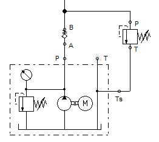
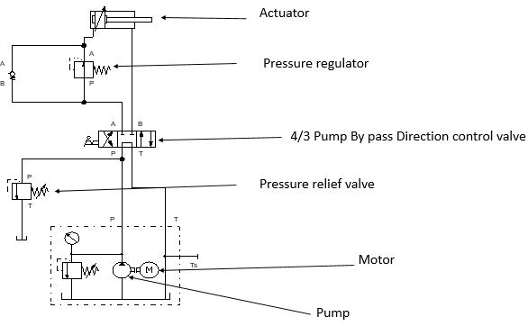
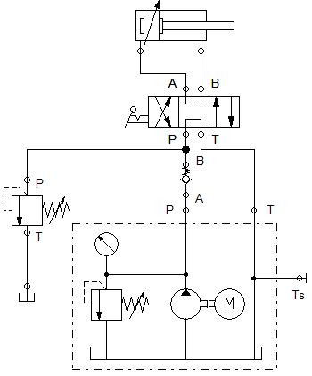
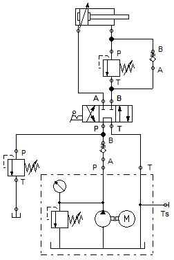

Hello all !!!
I warmly welcome you all to Engineer Point Hydraulics Page. If you have gone through pneumatics
you might have known that pnemuatics has limitaion of force. It can lift weight only till some
thousands of Newtons. But Hydraulics Has wide range of output power. Hence for heavy machines like JCB,
Cranes, Submarines use Hydraulics system. It has some drawback too. Let's discuss them briefly.
Hobbing is a machining process for gear cutting, cutting splines, and cutting sprockets on a hobbing machine, which is a special type of milling machine. The teeth or splines of the gear are progressively cut into the material (a flat, cylindrical piece of metal) by a series of cuts made by a cutting tool called a hob
It ensure that the hydraulic oil does not creates pressure on motor if load is excessive then limit.
It ensure that the hydraulic pressure is not build more than required.
Controls the cylinder direction
Filters the incoming oil from the circuit and send back to the tank.
 Hydrualic oil is designated as per DIN standard DIN51524 and DIN51525 eg. HLP68
viscosity index defines greater the index smaller is the change in viscosity for a given temperature



